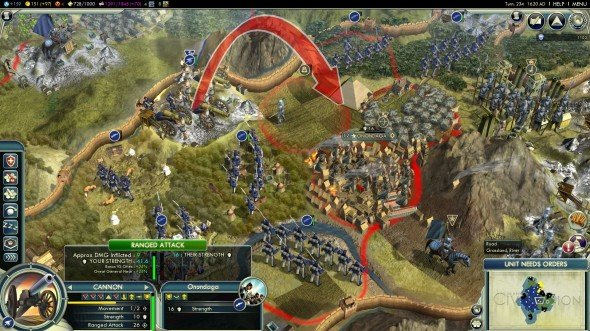

My Iroquois nation spreads across the world quickly, being likened to plague by my enemies. In real life, this relatively small group of people was all but wiped out by the end of the 20th century, but in my game, they are a force to be reckoned with -- a nation wresting control of the seas with modern navies, and taking cities by force with infantry and tanks. Manifest Destiny takes on a whole new meaning; by 2010, I've slowly but surely conquered the Americans and other European nations, subduing them to my rule... or simply burning their once-haughty nations to ashes. This is what Civilization V is all about. It's a turn-based strategy game based around building up a selected society into a world power. And, yes, Civilization V can look seriously boring to the casual bystander, but for the person at the helm of the game each turn can lead to a weighty decision, giving the player a certain feeling of power that few, if any, games match. Civilization has no campaign, instead it simply allows the players to create a world of their devising and jump right into it either by themselves or with others in multiplayer. The biggest choice a player will make is what civilization they're going to play. Each civilization is led by a great leader from history, and gets a few special benefits and units, so its' important to consider what type of victory you're out to achieve before setting your nationality. For instance the French get cultural bonuses that give them a huge bonus towards a cultural victory, while playing Germany will give players access to powerful military units like the Panzer tank that can aid in taking over the world by force. Of course you can always pick a military-focused leader and take them on a route towards a cultural victory, but this will also present a greater challenge.
Defying the urge to phone-in an unambitious sequel and coast on past successes, Sid Meier's Civilization V is anything but a lazy rehash. It feels almost as if someone described the concept of the renowned 19-year-old turn-based strategy series to a talented designer who'd never played it, and let him come up with his own version. It's similar enough to be familiar to veterans, different enough to be fresh, and its polish and accessibility make it a great place for new players to pick up one hell of a Civ addiction. At a foundational level, it's very familiar. You begin with a single settler in 4000 BC, and over the next 6,050 years you lead your fledgling nation turn-by-turn as you found a city, research technologies, raise an army, build history's greatest man-made wonders, expand to a sprawling empire and finally make your play for world domination - all in competition with other nations. Graphics may be superficial in a game like this, but it has to be said that Civ V is indisputably the best looking turn-based strategy game ever made. The painterly art style of the randomly-generated virgin landscape you see when starting a new game feels like Monet meets Google Maps, with bright colors and stunning attention to detail. Zooming in on a tile with a fur resource shows a pair of foxes frolicking together. Cattle, sheep, horses and elephants graze their respective tiles indicating sources of food, mounts and ivory, and in the hypnotically glistening ocean you can see whales breaching and schools of fish swimming beneath the surface. It's the most beautiful, lively virtual game board you've ever seen. 